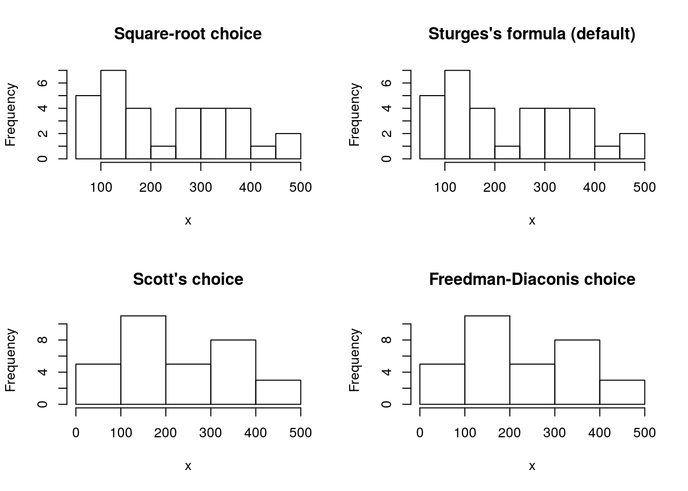
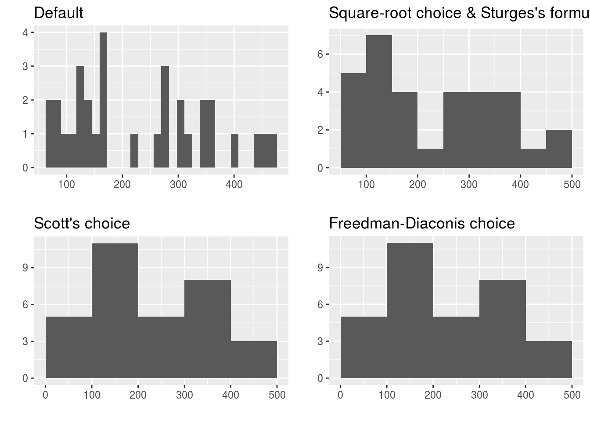
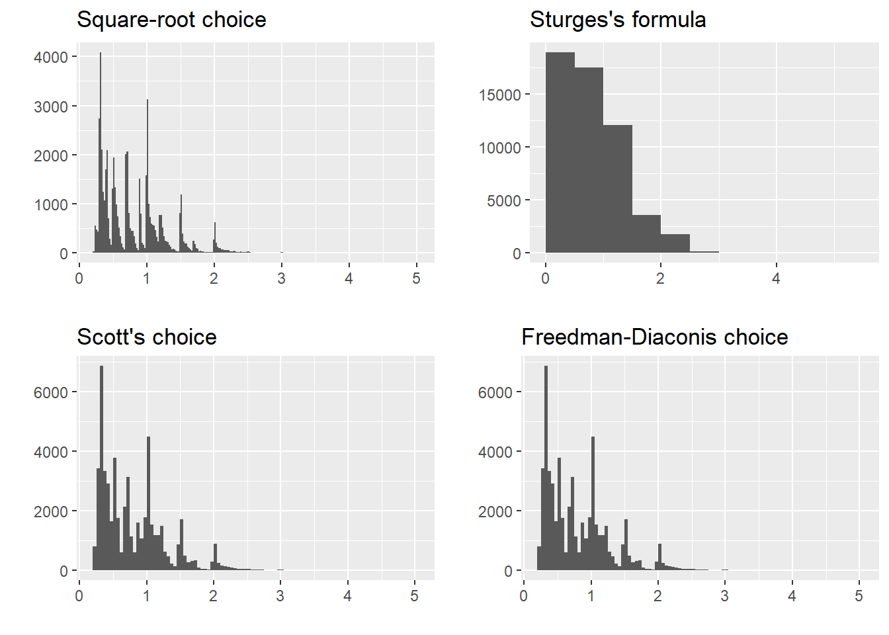
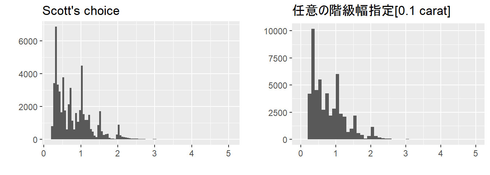
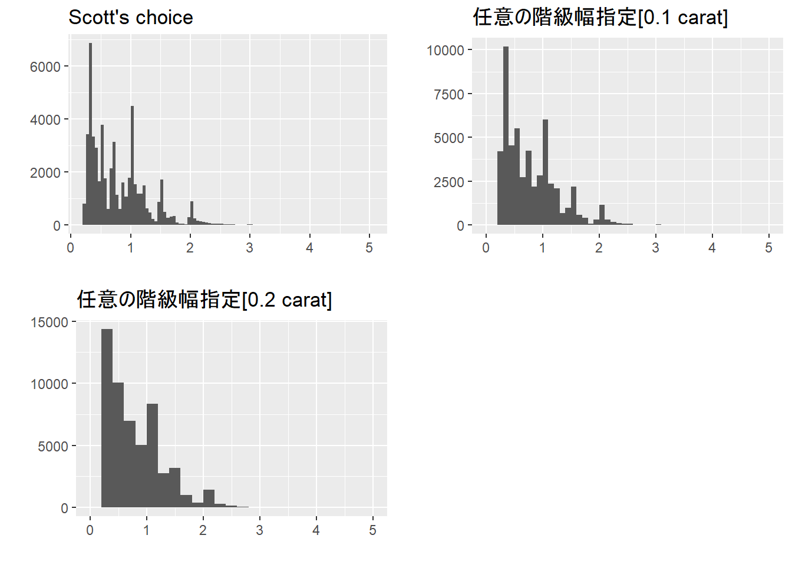

ヒストグラム
ヒストグラムはデータの分布を確認するために利用される基本的なグラフです。縦軸に度数（データの数）をとるので度数分布図とも言われます。Excelなどでヒストグラムを描くには度数分布表を作成してから描くことが多いですが、R では元になるデータを描画関数に与えるだけでヒストグラムを描くくことが可能です。
必要なパッケージ
本ページのコードを実行するには標準パッケージ以外に以下の追加パッケージを読み込んでおく必要があります。
| Package | Description |
|---|---|
| gridExtra | Miscellaneous Functions for “Grid” Graphics |
| tidyverse | Easily Install and Load the ‘Tidyverse’ |
対象データ
標準パッケージや追加パッケージに組み込まれている以下のデータセットを用います。なお、ggplot2パッケージはtidyverseパッケージを読み込めば自動的に読み込まれます。
| Dataset | Package |
|---|---|
| iris | datasets |
| mtcars | datasets |
| diamonds | ggplot2 |
ヒストグラムを描くのに必要な情報
ヒストグラムを描くためには階級（ビン）を正しく指定する方法があります。
基本的な考え方
階級（ビン）を決める一意の方法はありません。階級の幅（ビンの幅）が異なるとヒストグラムの形状も異なるためにデータの特徴を最も表せるような階級の幅（ビンの幅）を定める必要があります。ただし、既に様々な計算方法が提案されていますのでこれらを有効に使ってください。
階級数の求め方
階級を決めるには階級の数（ビンの個数）または階級の幅（ビンの幅）を決める必要があります。階級の幅（ビンの幅）は階級の数（ビンの個数）を元に決めることができ、階級の数（ビンの個数）を求めるのに下表のような計算方法があります。具体的な計算方法はネットなどで確認してください。
| 階級数の計算方法 | Rでの関数 | 備考 |
|---|---|---|
| Square-root choice | sqrt(length(x)) |
データxの数(n)の平方根 |
| Sturges’s formula | nclass.Sturges(x) |
データxの数(n)が\(n \ge 30\)を満たす場合 |
| Scott’s choice | nclass.scott(x) |
標準偏差を用いる計算方法 |
| Freedman-Diaconis choice | nclass.FD(x) |
四分位範囲に基づく計算方法 |
実際に以下のmtcarsデータセットのmpgとdisp、hp各データの階級の数（ビンの個数）がどのような値になるか比較してみます。
mtcars
| 階級数の計算方法 | mpgの階級数 | dispの階級数 | hpの階級数 |
|---|---|---|---|
| Square-root choice | 6 | 6 | 6 |
| Sturges’s formula | 6 | 6 | 6 |
| Scott’s choice | 4 | 3 | 4 |
| Freedman-Diaconis choice | 6 | 4 | 6 |
このように計算方法により階級の数（ビンの個数）が異なることが分かります。
階級（幅）の求め方
階級数が求められましたので次に階級（幅）を求めます。対象となるデータの範囲を単に階級数で割ると中途半端な階級幅になってしまうことがありますので、R では適切な階級（幅）を得るためのpretty関数が用意されていますのでこれを使います。
pretty(x, n)pretty関数は\(x\)の値の範囲をカバーし（階級数+1）個となるような階級を計算します。ただし、適切な階級になるように調整1が行われます。
1 The values are chosen so that they are 1, 2 or 5 times a power of 10.
実際にpretty関数を用いてmpgとdisp、hp各データに対する階級を計算してみます。
mpgの階級数と階級
| 階級数の計算方法 | 階級数 | 階級 |
|---|---|---|
| Square-root choice | 6 | 10, 15, 20, 25, 30, 35 |
| Sturges’s formula | 6 | 10, 15, 20, 25, 30, 35 |
| Scott’s choice | 4 | 10, 15, 20, 25, 30, 35 |
| Freedman-Diaconis choice | 6 | 10, 15, 20, 25, 30, 35 |
dispの階級数と階級
| 階級数の計算方法 | 階級数 | 階級 |
|---|---|---|
| Square-root choice | 6 | 50, 100, 150, 200, 250, 300, 350, 400, 450, 500 |
| Sturges’s formula | 6 | 50, 100, 150, 200, 250, 300, 350, 400, 450, 500 |
| Scott’s choice | 3 | 0, 100, 200, 300, 400, 500 |
| Freedman-Diaconis choice | 4 | 0, 100, 200, 300, 400, 500 |
hpの階級数と階級
| 階級数の計算方法 | 階級数 | 階級 |
|---|---|---|
| Square-root choice | 6 | 50, 100, 150, 200, 250, 300, 350 |
| Sturges’s formula | 6 | 50, 100, 150, 200, 250, 300, 350 |
| Scott’s choice | 4 | 0, 100, 200, 300, 400 |
| Freedman-Diaconis choice | 6 | 50, 100, 150, 200, 250, 300, 350 |
これで階級が求められました。
度数分布表
ヒストグラムを描く前に求めた階級から度数分布表を作成してみましょう。データがどの階級に含まれるかを求めるにはcut関数を使います。度数はcut関数で求めた階級をdplyr::count関数で集計することで簡単に求められます。
dispの度数分布表
Square-root choice & Sturges’s formula
x <- mtcars$disp # 対象データ
n <- round(sqrt(length(x))) # 階級数を求める
breaks <- pretty(x, n) # 階級を求める
mtcars %>%
dplyr::mutate(freq = cut(disp, breaks = breaks, include.lowest = TRUE)) %>%
dplyr::count(freq) %>%
dplyr::mutate(cum = cumsum(n)) %>%
dplyr::rename(`階級` = freq, `度数` = n, `累積度数` = cum)
Scott’s choice & Freedman-Diaconis choice
x <- mtcars$disp # 対象データ
n <- nclass.scott(x) # 階級数を求める
breaks <- pretty(x, n) # 階級を求める
mtcars %>%
dplyr::mutate(freq = cut(disp, breaks = breaks, include.lowest = TRUE)) %>%
dplyr::count(freq) %>%
dplyr::mutate(cum = cumsum(n)) %>%
dplyr::rename(`階級` = freq, `度数` = n, `累積度数` = cum)
ヒストグラム
標準パッケージを用いる方法
標準パッケージにはhist関数というヒストグラム描画用関数が用意されています。hist関数はデフォルトでSturgesの公式を用いた階級を元にヒストグラムを描画します。
dispのヒストグラム
x <- mtcars$disp
old_par <- par()
op <- par(mfrow = c(2, 2))
hist(x, breaks = pretty(x, round(sqrt(length(x)))), main = "Square-root choice")
hist(x, main = "Sturges's formula (default)")
hist(x, breaks = "scott", main = "Scott's choice")
hist(x, breaks = "FD", main = "Freedman-Diaconis choice")
par(op)
par(old_par)
追加パッケージを用いる方法
ggplot2パッケージにはggplot2::geom_histgram関数というヒストグラム描画用関数が用意されています。ggplot2::geom_histgram関数はhist関数とは異なりデフォルトで単純分割の階級幅（階級数=30）を取りますので階級幅は別途指定することを推奨します。
dispのヒストグラム
x <- mtcars$disp
gg_def <- as.data.frame(x) %>%
ggplot2::ggplot(aes(x = x)) +
ggplot2::geom_histogram() +
ggplot2::labs(title = "Default", x = "", y = "")
n <- nclass.Sturges(x)
gg_sf <- as.data.frame(x) %>%
ggplot2::ggplot(aes(x = x)) +
ggplot2::geom_histogram(breaks = pretty(x, n)) +
ggplot2::labs(title = "Square-root choice & Sturges's formula", x = "", y = "")
n <- nclass.scott(x)
gg_sc <- as.data.frame(x) %>%
ggplot2::ggplot(aes(x = x)) +
ggplot2::geom_histogram(breaks = pretty(x, n)) +
ggplot2::labs(title = "Scott's choice", x = "", y = "")
n <- nclass.FD(x)
gg_fdc <- as.data.frame(x) %>%
ggplot2::ggplot(aes(x = x)) +
ggplot2::geom_histogram(breaks = pretty(x, n)) +
ggplot2::labs(title = "Freedman-Diaconis choice", x = "", y = "")
gridExtra::grid.arrange(gg_def, gg_sf, gg_sc, gg_fdc)
任意の階級を指定する
データによってはSturgesの公式などから求めた階級でも適切な階級にならない場合があります。ggplot2パッケージに含まれるdiamondsデータセットを例にして任意の階級の指定方法を示します。
diamondsデータセットは5万個を超えるダイヤモンドに関するデータです。ダイアモンドの重さ（カラット数）の五数要約（0.2, 0.4, 0.7, 1.04, 5.01）を見る限り右に歪んだロングテールな分布になっていることが想像できます。前出の４つの計算式を用いてdiamondsデータセットの階級数と階級幅を求めてみます。
| 階級数の計算方法 | 階級数 | 階級幅 |
|---|---|---|
| Square-root choice | 232 | 0.02 |
| Sturges’s formula | 17 | 0.5 |
| Scott’s choice | 110 | 0.05 |
| Freedman-Diaconis choice | 142 | 0.05 |
これを元にヒストグラムを描いてみます。
n <- round(sqrt(length(x)))
gg_src <- as.data.frame(x) %>%
ggplot2::ggplot(aes(x = x)) +
ggplot2::geom_histogram(breaks = pretty(x, n)) +
ggplot2::labs(title = "Square-root choice", x = "", y = "")
n <- nclass.Sturges(x)
gg_sf <- as.data.frame(x) %>%
ggplot2::ggplot(aes(x = x)) +
ggplot2::geom_histogram(breaks = pretty(x, n)) +
ggplot2::labs(title = "Sturges's formula", x = "", y = "")
n <- nclass.scott(x)
gg_sc <- as.data.frame(x) %>%
ggplot2::ggplot(aes(x = x)) +
ggplot2::geom_histogram(breaks = pretty(x, n)) +
ggplot2::labs(title = "Scott's choice", x = "", y = "")
n <- nclass.FD(x)
gg_fdc <- as.data.frame(x) %>%
ggplot2::ggplot(aes(x = x)) +
ggplot2::geom_histogram(breaks = pretty(x, n)) +
ggplot2::labs(title = "Freedman-Diaconis choice", x = "", y = "")
gridExtra::grid.arrange(gg_src, gg_sf, gg_sc, gg_fdc)
グラフを見て分かるようにSquare-root choiceは階級幅が狭すぎるように見えます。また、Sturgesの公式は階級幅が広すぎてデータが集中している部分が埋もれてしまっています。Scottの選択やFreedman-Diaconisの選択は前述の二つに比べると形状が見えていますが階級幅が狭いように感じます。
このような場合は公式などを利用せずに任意の階級を指定することで適切なヒストグラムを描くことが可能です。例えば、階級幅を0.1カラット単位にすると下図のようになります。
breaks <- c(seq(0, 5.0, 0.1))
gg_any <- as.data.frame(x) %>%
ggplot2::ggplot(aes(x = x)) +
ggplot2::geom_histogram(breaks = breaks) +
ggplot2::labs(title = "任意の階級幅指定[0.1 carat]", x = "", y = "")
gridExtra::grid.arrange(gg_sc, gg_any, ncol = 2)
階級幅を0.2カラット単位にすると下図のようになり1カラット近辺にも大きなピークがあることが見えてきます。
breaks <- c(seq(0, 5.0, 0.2))
gg_any2 <- as.data.frame(x) %>%
ggplot2::ggplot(aes(x = x)) +
ggplot2::geom_histogram(breaks = breaks) +
ggplot2::labs(title = "任意の階級幅指定[0.2 carat]", x = "", y = "")
gridExtra::grid.arrange(gg_sc, gg_any, gg_any2, ncol = 2)
左閉じと右閉じ
ヒストグラムの形状に影響を与えるのは階級だけではありません。度数の集計条件もヒストグラムの形状に大きな影響を与えます。集計条件には下表のように二つの条件があります。
| 集計条件 | 内容 |
|---|---|
| 階級の閉じ | 階級の下端値と上端値のどちらを含めるか（下表参照） |
| 階級最下限値 | 最も下側の階級の下端値を含めるか否か |
| 階級の閉じ | 集計条件 | 表記 | 備考 |
|---|---|---|---|
| 左閉じ | \(a \le 階級 \lt b\) | [a, b) | a以上b未満を階級内とする |
| 右閉じ | \(a \lt 階級 \le b\) | (a, b] | aを超えb以下を階級内とする |
| 両閉じ | \(a \le 階級 \le b\) | [a, b] | 最下限の階級のみに適用される |
mtcarsデータセットのhpデータで階級の閉じを変えた場合のヒストグラムを以下に示します。
gg_left <- mtcars %>%
ggplot2::ggplot(aes(x = hp)) +
ggplot2::geom_histogram(breaks = pretty(mtcars$hp,
n = nclass.Sturges(mtcars$hp)),
closed = "left") +
ggplot2::labs(title = "左閉じ", y = "")
gg_right <- mtcars %>%
ggplot2::ggplot(aes(x = hp)) +
ggplot2::geom_histogram(breaks = pretty(mtcars$hp,
n = nclass.Sturges(mtcars$hp)),
closed = "right") +
ggplot2::labs(title = "右閉じ（default）", y = "")
gridExtra::grid.arrange(gg_left, gg_right, ncol = 2)
このように度数分布の集計条件を変るとヒストグラム形状も変わる場合がありますので注意してください。なお、hist関数、ggplot2::geom_histgram関数共に階級の閉じは「右閉じ」がデフォルトになっています。
 CC BY-NC-SA 4.0 , Sampo Suzuki [2018-06-10 00:15(JST)]
CC BY-NC-SA 4.0 , Sampo Suzuki [2018-06-10 00:15(JST)]